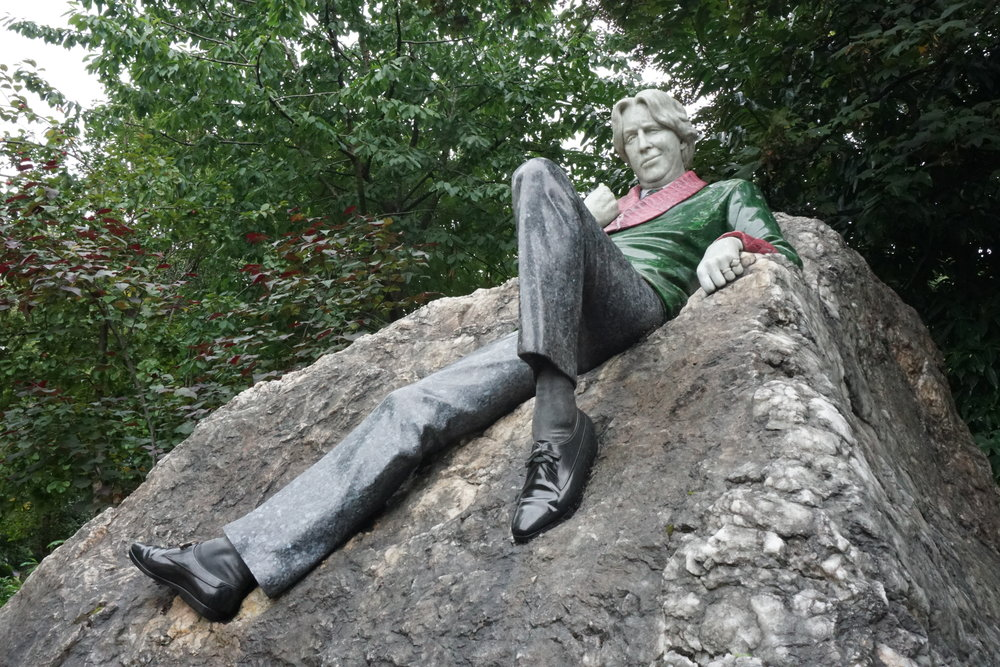

Principal Monuments of The City
In this document we will try to explain the main monuments of a city of international importance such as Dublin, the capital of Austria.
Molly Malone Statue
The statue of Molly Malone is one of the icons of Dublin. It depicts a woman with a double life, fishmonger by day and representative of the world's oldest trade, prostitute, by night, who supposedly lived in the 17th century. A late 19th century song called Molly Malone or Cockles and Mussels made the story fashionable. In fact that song is the unofficial anthem of Dublin and has been interpreted by actors in different movies. There is a tradition that to return to the city you have to touch the bust. So if you want to return to Dublin, apart from taking the typical photo with her, keep in mind where you place your hands.
Oscar Wilde Statue
The Oscar Wilde Statue is located in Merrion Square and was made by sculptor Danny Osborne. The statue shows Oscar Wilde reclining almost provocatively on a huge granite stone and is positioned so that he is facing his former home in Merrion Square, on the north side. The work was commissioned by the Guinness Ireland group from sculptor Danny Osborne who spent two and a half years in its execution. As a model for the head he took Wilde's own grandson, Merlin Holland.
